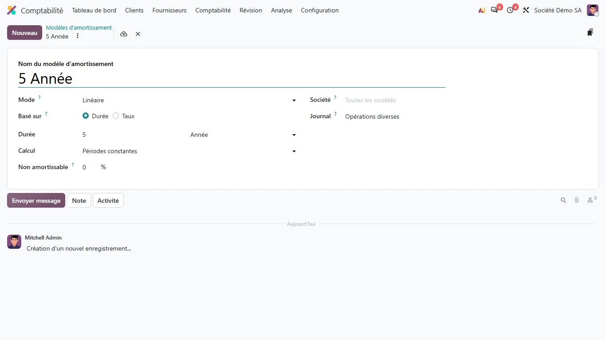

Paramétrer les modèles d'immobilisations
Objectif. Préparer un modèle par catégorie : comptes, durée et méthode.
Menu Odoo 15Comptabilité > Configuration > Modèles d'immobilisations
Étapes
- Cliquez sur Nouveau : nom de la catégorie (ex. Matériel informatique - 3 ans).
- Choisissez la méthode (linéaire), la durée et la périodicité (mensuelle).
- Renseignez les comptes : immobilisation (2), amortissement (28) et dotation (681).
- Enregistrez, puis utilisez le modèle sur chaque nouvelle immobilisation.

À vérifier
- Chaque compte d'immobilisation utilisé a son modèle.
À éviter
- Ne mettez pas des durées différentes pour des biens de même nature.
Exercice
Créez le modèle « Matériel de bureau - 5 ans ».